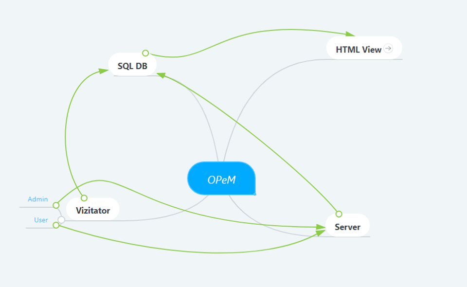
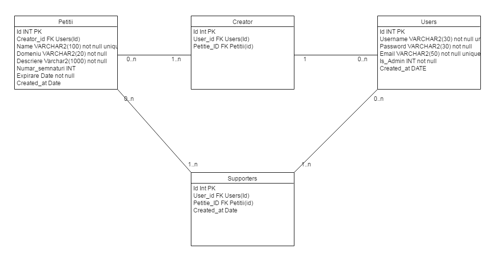
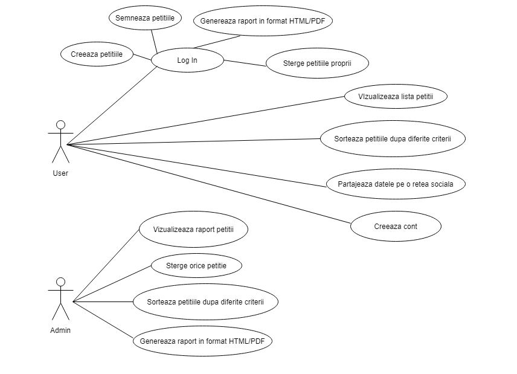

Online Petition Manager
Cuprins
1.Descriere
2.Tehnologii si limbaje utilizate
3.Diagrama baza de date + diagrama use case
4.Atributii
5.Retrospectiva
6.Bibliografie
1. Descriere
2. Tehnologii si limbaje utilizate
3. Diagrame
Diagrama Master:

Arhitectura bazei de date:

Diagrama use case:

4. Atributii
| Nume |
Task |
| Lungu Radu-Ionut |
BD + Front end + Back end (login/logout, register, pdfExport, check_auth, deletePetition, deletePetitionAdmin) |
| Danila Codrin |
BD + Front end + Back end (signPetition/unsign, htmlExport, newPetitie, listPetitii, flux Atom) |
5. Retrospectiva
| Nume |
Stare |
Likes |
Dislikes |
| Lungu Radu-Ionut |
★ ★ ★ ★ ☆ |
lucrul in echipa; lucruri noi, interesante; |
mai multa coordonare intre membrii echipei; |
| Danila Codrin |
★ ★ ★ ★ ☆ |
limbaje noi de programare; colaborare; |
nopti nedormite; organizarea proasta a timpului; |
6. Bibliografie
-
Bellacera
Jake
.
PHP to ICS.
GitHub.
-
Saini
R.
K. ,
shubham
715. ,
White
Hat
.
Intrebari in legatura cu JSON si $ajax.
StackOverflow.
-
Imagini cu drept de reutilizare.
PixAbay.
-
Imagini cu drept de reutilizare.
Google images.